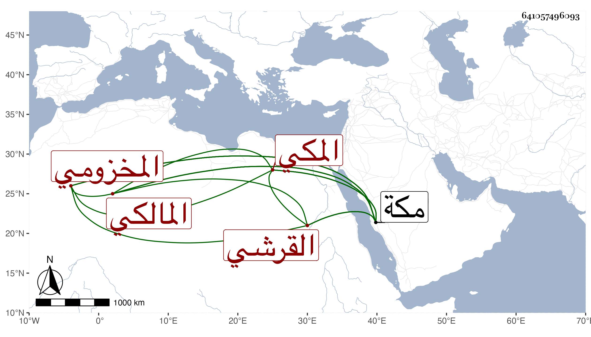

0902Sakhawi.DawLamic.ITO20230111-ara1.EIS1600.641057496093
Biography ID: 641057496093
533
محمد بن محمد بن محمد بن حسين الرضي أبو حامد بن القطب أبي الخير بن الجمال أبي السعود القرشي المخزومي المكي المالكي والد ظهيرة والمحب محمد وحسين وابن عم السبعة قبله ويعرف كسلفه بابن ظهيرة . ولد في آخر ليلة الاثنين تاسع ربيع الأول سنة سبع وثمانمائة بمكة ونشأ بها فحفظ القرآن عند الفقيه يوسف الدباغ المصري وأكثر الرسالة وحضر في الفقه عند سالم وأبي الطاهر المغربيين حين إقامتهما بمكة وعند البساطي وغيرهم وسمع على قريبه الجمال بن ظهيرة والزين المراغي والشمسين محمد بن المحب الدمشق وابن الجزري والعفيف عبد الله بن صالح وابن سلام وغيرهم وأجاز له أبو اليمن الطبري وقريبه الزين والمجد اللغوي والشرف بن الكويك وعائشة ابنة ابن عبد الهادي والجمال عبد الله الحنبلي وعبد القادر الأرموي ورقية ابنة ابن مزروع وآخرون وولي نصف إمامة المالكية بمكة في سنة ست وثلاثين بعد وفاة عمر بن عبد العزيز النويري ثم انفصل عنها في ربيع الأول من التي تليها بأبي عبد الله النويري ولقيته بمكة في مجاورتين وتحدثت معه بل أجاز ولم يكن بذاك. مات بعد أن أثكل أنجب ابنيه وصبر في ليلة الثلاثاء مستهل المحرم سنة سبع وسبعين غفر الله له ورحمه وإيانا .
